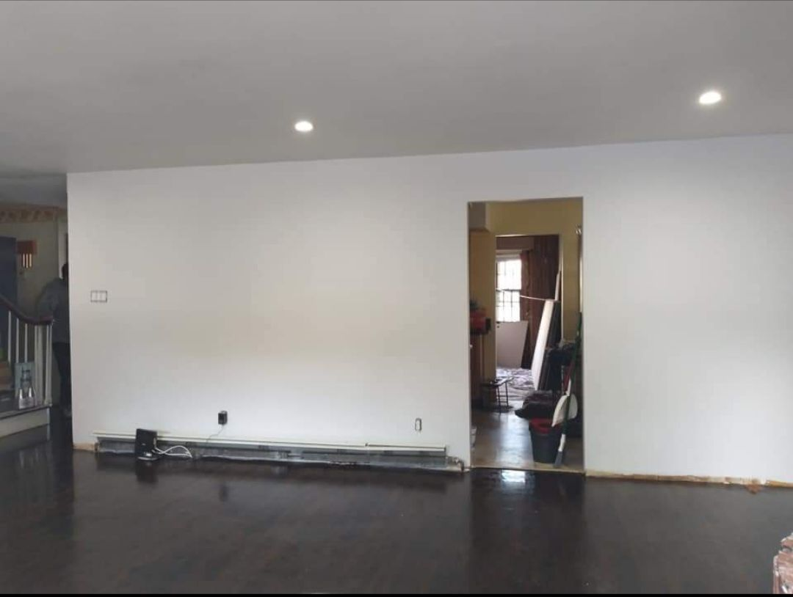
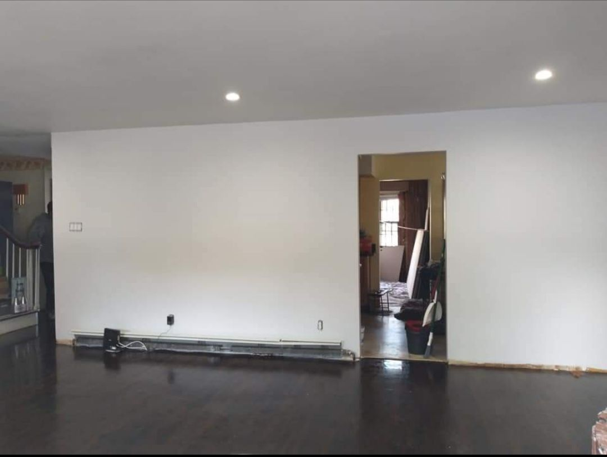

Expert Ceiling Repair & Restoration in Suffolk County
Cracked, stained, sagging, or water-damaged ceilings are more than an eyesore — they can indicate serious structural issues. Long Island Wall Pro provides expert ceiling repair and restoration across Suffolk County, bringing damaged ceilings back to like-new condition.

From minor cosmetic repairs to full ceiling replacements after water damage, our union-trained team handles it all. We also specialize in popcorn ceiling removal — transforming outdated textured ceilings into smooth, modern finishes that increase your home's value.
 

What's Included
We work efficiently to minimize disruption to your daily life, protect your floors and furnishings, and deliver results that look flawless from every angle. Emergency ceiling repair is available 24/7 for urgent situations like active leaks or structural concerns.
- Water stain repair & restoration
- Crack and hole repair
- Sagging ceiling repair
- Popcorn ceiling removal & smoothing
- Full ceiling replacement
- Plaster ceiling restoration
- Painting & finishing included
- 24/7 emergency ceiling repair
Ready to Get Started?
Contact Long Island Wall Pro today for a free, no-obligation estimate. We serve all of Suffolk County, Nassau County, and the greater Long Island area.